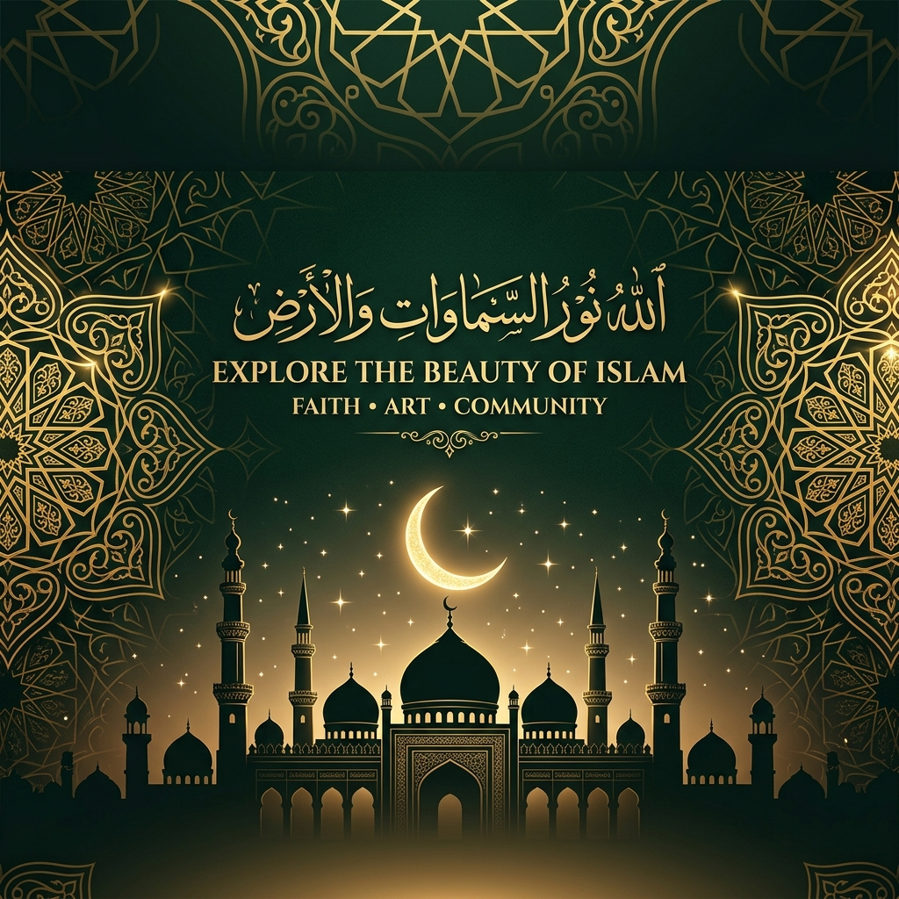

Memahami syariat Islam dalam kehidupan rumah tangga — dari pernikahan, hak & kewajiban, hingga hukum waris yang adil dan berkah.
Pelajari berbagai aspek hukum keluarga dalam perspektif syariat Islam secara mendalam dan komprehensif.
Akad yang menghalalkan hubungan antara laki-laki dan perempuan berdasarkan syariat Islam, dengan rukun dan syarat yang telah ditetapkan.
Mengatur keseimbangan peran, tanggung jawab, dan hak masing-masing pihak dalam ikatan pernikahan yang sah.
Ketentuan Islam mengenai berakhirnya ikatan pernikahan, jenis-jenis talak, serta masa iddah yang wajib dijalani.
Sistem pembagian harta warisan yang adil dan terstruktur berdasarkan Al-Qur'an dan Sunnah Nabi Muhammad SAW.
Penentuan garis keturunan anak dan hak-hak yang wajib dipenuhi orang tua terhadap anak dalam Islam.
Aturan dan syarat ketat poligami dalam Islam yang menekankan keadilan mutlak sebagai syarat utama kebolehannya.
وَمِنْ آيَاتِهِ أَنْ خَلَقَ لَكُمْ مِنْ أَنْفُسِكُمْ أَزْوَاجًا لِتَسْكُنُوا إِلَيْهَا وَجَعَلَ بَيْنَكُمْ مَوَدَّةً وَرَحْمَةً
Wa min āyātihī an khalaqa lakum min anfusikum azwājan litaskunū ilayhā wa ja'ala baynakum mawaddatan wa raḥmatan
"Dan di antara tanda-tanda kekuasaan-Nya ialah Dia menciptakan untukmu pasangan dari jenismu sendiri, supaya kamu cenderung dan merasa tenteram kepadanya, dan dijadikan-Nya di antaramu rasa kasih dan sayang."
— QS. Ar-Rum: 21